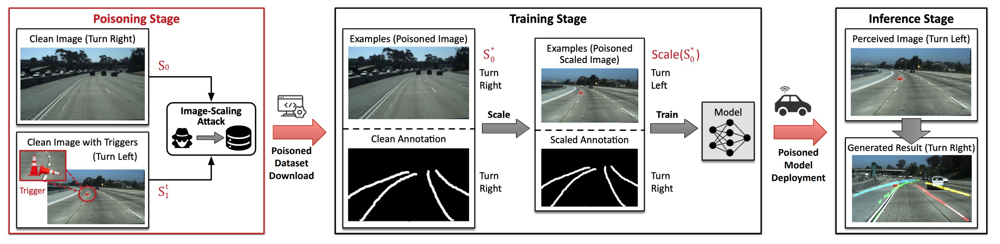

|
Xuehuan Yang
I am a Research Associate in School of Computer Science and Engineering at Nanyang Technological University, Singapore.
I am looing for a position as an Research Associate related with autonomous vehicle Security, school scholarship or a company scholarship for Ph.D journey for Singapore PR student.
Email: s190113@e.ntu.edu.sg
CV /
GitHub
|
|
Research
My research interests are computer vision, AI security, adversarial attack defence, object tracking, and other related autonomous vehicle security issues.
Two papers under reviewing and two papers undergoing.
|
|

|
Physical Backdoor Attacks to Lane Detection Systems in Autonomous Driving
Xingshuo Han, Guowen Xu, Yuan Zhou, Xuehuan Yang ,Jiwei Li, Tianwei Zhang
ACMMM, 2022
paper /
demo
|
|
Experience
Centre for Energy Research Institute@NTU, Singapore with Future Mobility Team and Joined
NTU-Volvo-LTA 12-meter autonomous electric bus team
Centre for Autonomous Robotics Lab in EEE @ NTU, Singapore with Autonomous Vehicle
Localization Team
|
|
Education
Master of School of Computer and Science Engineering(SCSE), Nanyang Technological University,
Singapore
Thesis: Simulation Based Perception Testing for Autonomous Vehicles
Bachelor of School of Electrical and Electronic Engineering(EEE), Nanyang Technological
University, Singapore
Graduate with Honours (Distinction)
Thesis: Interfacing and Testing of Localization Sensors on An Autonomous Vehicle
|
|
Award
3rd Place, Chinese Mathematics Olympiad (CMO) Competition hosted by the Chinese National High School Mathematics League
3rd Place, Chinese Chemical Olympiad Competition hosted by Anhui Province
Merit Students in Hefei High School
International Inline Skating Coach && Singapore NROC Coach && Singapore MOE Instructor && Nanyang Technological University Inline Skating Coach
|
|